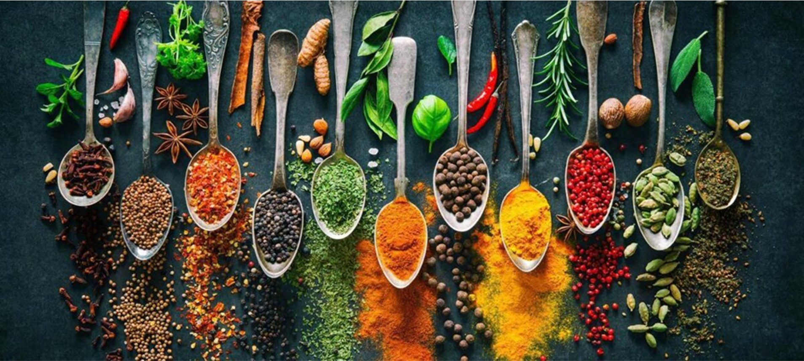

Our Product Range
Breakfast Cereals
A wide variety of locally made cereals for a healthy start.

Local And Foreign Ingredients
The pure local spices of high-quality made from the heart of our country.

Dairy Products
All variations of dairy products.